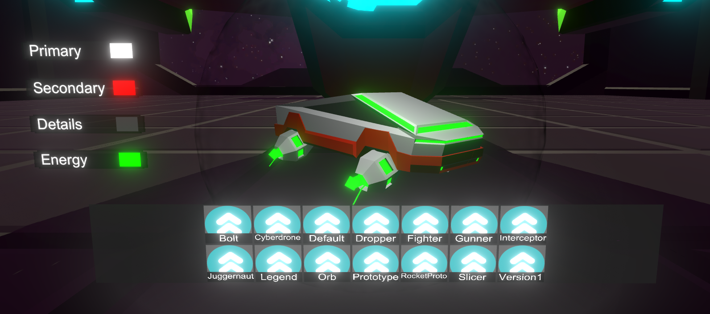

Frone
A retro-futuristic endless runner, the player needs to dodge obstacles and get as far as possible.
Project
Frone is probably my biggest project, with different areas, drone customisation, factions to support and more.
This game is still in development, there are still a lot of placeholder models.
Gameplay
The player can walk around in a first-person hub world, the hangar. The hangar is the base of operations, this is where the player can craft blueprints and materials, contact NPC factions, start missions and in a future update: place decorations.
There are a few mission types, patrol is probably the most basic mission type: the player needs to fly through the area and reach the end of the level.
The player will also be able to find and gather items depending on the mission type and area the player is in, in the mission type called "nest raid" the player races an enemy resource gatherer towards a large stockpile of resources gathered by another enemy type.
Drones and customisation
Players are able to collect different kinds of drones, different drone types have their own stats and abilities.
Factions and reputation

The game takes place during an alien invasion, There are different groups of survivors living in hiding. Each group has its own motives and goals, the player can choose to support these groups to gain access to their technology.

Frone is still in development, some features that will be added in the future are:
-Main menu rework: In the current main menu, the player can navigate by clicking buttons, I want the player to be able to walk around in his/her ship in first person to make the game more immersive.
The player can start missions, manage factions, customize drones and other things by interacting with the consoles and systems in his/her ship.
-missions update: A new gamemode were the player is given a challenge to complete on a limited track.
There will be multiple challenges available, like picking up an item, destroying something or finishing the track under a certain time.
The mission will end at the end of the track, the player's ship will land there to allow the player to fly back in, if the challenge is completed, the mission will be a success and the player will recieve rewards.